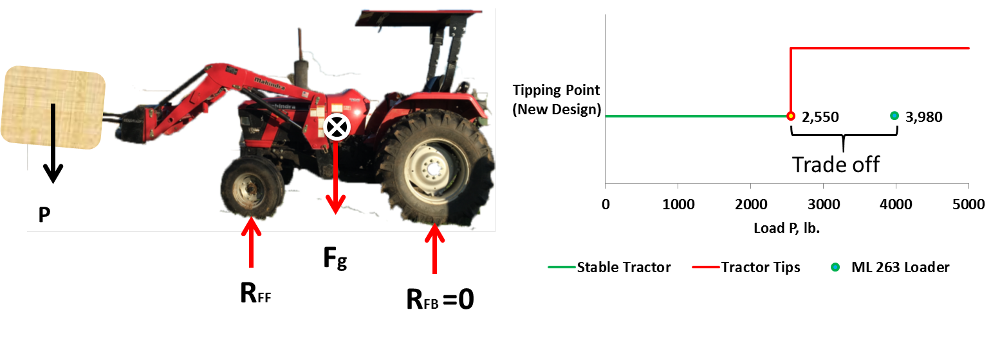

Design of a Telescoping Front End Loader
Situation: Design a telescoping front end
loader to add three additional feet of reach to the Mahindra
5540 4WD tractor arm.
Task: Perform FEA analysis on a new telescoping
boom attachment and propose a final design that can prove to be operable
under maximum loading conditions.
Action: Using Solidworks and Ansys software, finite
element analysis was applied to evaluate the strength, structural
integrity, and geometric stability of the telescoping boom
under the worst case loading conditions.
Result: Proposed a final design with a full
bill of materials after FEA analysis.
Shows the Mahindra 5530 4WD tractor and ML 263 front loader attachment.
The proposed telescoping boom would replace the mechanical
component circled on the front loader
×

SolidWorks model of the telescoping boom. Shows the lengths
at which the boom can be extended and retracted
×

Shows a free body diagram of the tractor with a load on
the bale spear and the tradeoff load at which the tractor tips.
The load (P) at which the tractor tips when fully extended was
determined to be 2,550 lb.
×
Shows the loading and boundary conditions on the boom at
the tipping condition
×
Convergence diagram for maximum Von Mises stress
×
Maximum Von Mises stress occurs at the outer edge and middle of the 12 inch
boom extension
×
shows the vertical deflection of the 12 inch boom member at
full extension
×
Compares the yield strengths of common materials used by tractor
manufacturers to the maximum Von Mises stress.
×
Proposed design with selected materials
×